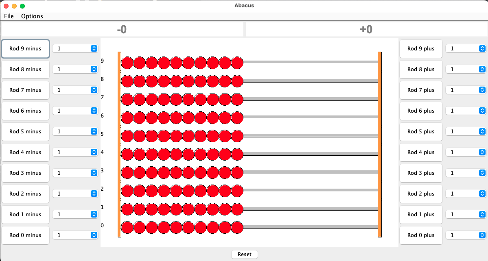

This project is a desktop Java application that demonstrates the use of the German abacus. It uses Log4j for logging and provides features such as the sound of clicking beads, and the display of the results (both positive and negative). Below is a screenshot of this piece of software.
